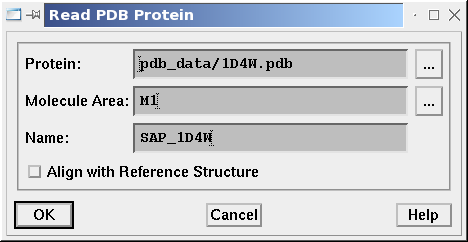
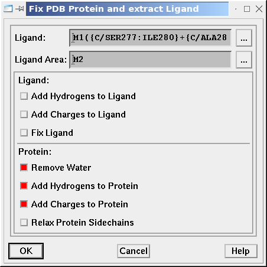
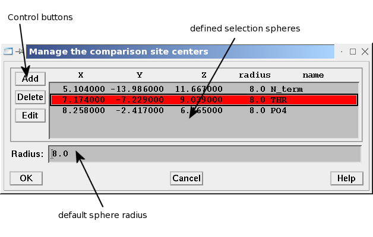
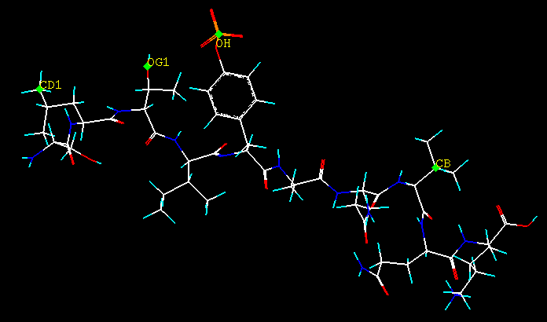
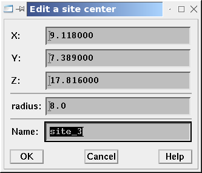
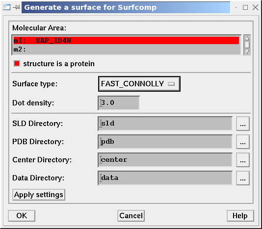

|
In this tutorial you will learn how to use the SPL Surfcomp scripts to generate
molecular surfaces for protein structures taken from a PDB file, how to select
active site centers and how to prepare the surface comparison experiments.
We assume that you have already started Sybyl 6.91 and initialized the Surfcomp
scripts with
SYBYL> startDuck
-
Preparation of the Input Data
-
Prepare Protein Structures
-
Selection of the active site centers
-
Generation of the Molecular Surfaces
-
Preparation of the Second Molecule
-
Preparation of the Experiment
-
Tailoring the
run.sh Script
1. Preparation of the Input Data
For the preparesurfcomp script used in
step 5 the input data must be stored in a special
directory structure. To do this create a new subdirectory in
TUTORIAL_HOME called input. And make this directory
your data directory with the command:
Surfcomp >> Select data directory ...
select TUTORIAL_HOME/input
2. Prepare Molecules
Download the tutorial data
sybyl_protein_data.tar.gz and unpack its contents in the
input/pdb_data directory. This provides you with the PDB structure
files of SAP (1D4W) and EAT-2 (1I3Z) in complex with the signaling peptide
pSLAM. We will now import the PDB files, setup the proper hydrogen and charges
and extract present ligand structures.
-
Let us start with the SAP protein. Call the Surfcomp protein reader dialog
Surfcomp >> Prepare Structure ...
select pdb_data/1D4W.pdb as PDB file
select the molecular area M1
select SAP_1D4W as name

Figure 2.1: The protein read dialog
When you press enter the protein is loaded into the first molecular area and
the view is focused on its center.
-
The next step in the structure preparation is the finishing of the protein
structure and the extraction of any ligands. The corresponding dialog pops up
immediately after the structure has been loaded. In this dialog first
check 'Remove Water'
check 'Add Hydrogens to protein'
check 'Add Charges to protein
This will remove all the crystal water molecules, since they will change the
proteins surface and it will add hydrogens and charges to the protein (which
are necessary for the surface calculation and comparison).
In the same dialog you can select ligand substructures, which can be
extracted into a different molecular area. To do this
press the buttom next to Ligand field and select the
substructures:
SER277 LEU278 THR279 ILE280 PTR1 ALA282 GLN283 VAL284 GLN285
LYS286
keep the 'Ligand Area' M2

Figure 2.2: The protein finish dialog
Pressing OK will add the charges and hydrogens and move the ligand structure
in the M2 area. The protein is now ready for surface generation.
3. Selection of the Active Site Centers
When the protein structure has been imported successfully and the ligand has
been extracted into a different molecular area, you can start to select the
site-spheres that define the regions you want to investigate by SURFCOMP. Define
these spheres at the position of atoms on the SLAM ligand. For that purpose we
suggest that you change the color of the ligand area (should be M2) to atomic
colors and hide the atomic structure of the protein. Then call the selection
dialog with
Surfcomp >> Define Site Center ...

Figure 3.1: The site selection dialog
In this dialog the buttons on the upper left corner are used to add, edit and
delete site spheres. The table that covers the upper right part contains the
data of all defined sites, including the position of the center, the radius
and the name. A default radius can be set in the text field below the list.
Note that the site centers are valid until you prepare
a new structure as described in step 2.
You should now add the following four atoms (see below) on the SLAM peptide as
site sphere centers by clicking the Add button on the dialog and
then selecting the atom with a mouse click. The coordinates of the selected atom
are then added to the table as a site center of a new sphere with the default
radius and an initial name. The name is important since it serves as an ID for
corresponding sites on different surfaces in the generation of the experiments
in step 6.

Figure 3.2: Site centers considered in the comparison of the SAP and EAT-2. All
centers are atoms of the SLAM peptide.
With the Edit button you can change the position of the center, the
radius and the name of a site sphere. Rename all sites according to the table in
Figure 3.1 and the last one to
VAL by
Select a site sphere in the table,
press Edit and
rename the site sphere

Figure 3.3: Changing a site sphere.
When you are finished with the site selection press OK on the site
selection dialog. Nothing will change on the display until you save the prepared
structure. Then all site centers will be added as dummy atoms to the protein
structure.
4. Generation of the Molecular Surfaces
We will now generate the surfaces for the prepared protein structure.
-
Open the surface generation dialog:
Surfcomp >> Generate Surface ...
-
In the dialog
select the protein (area M1)
change Surface type to Fast Connolly
check 'structure is a protein'

Figure 4.1: Settings in the surface generation dialog
press OK
The generation of the protein surface will take some time. The process is
finished when the Sybyl menu bar is accessible again. The result will be a
set of files in different subdirectories of
TUTORIAL_HOME/input:
% ls -R input
[...]
./center:
SAP_1D4W-FAST_CONNOLLY-3.0.txt
./data:
SAP_1D4W-FAST_CONNOLLY-3.0.dat
./own:
SAP_1D4W-FAST_CONNOLLY-3.0.own
./pdb:
SAP_1D4W-FAST_CONNOLLY-3.0.pdb
-
Finally you should save the prepared structure together with the site centers.
To do this choose
Surfcomp >> Save prep. Structure ...
You will be asked for a mol2 and pdb directory. If
you have set the TUTORIAL_HOME/input directory as your data
directory (step 1) you can take the default values.
In the following procedure the protein and ligand will be stored in a single
MOL2 file and in two PDB files. In addition a dummy atom will appear in
the protein structure for any site center you have defined.
5. Preparation of the Second Molecule
For every other molecule you have to repeat step 2,
3 and 4. But if the
problem is suitable to it you can align all other proteins to the protein
structure of the first (or any other) molecule in the PDB read procedure as
follows.
-
You have to load a reference structure (let us choose SAP, as we have saved it
before). Load the file
mol2/SAP_1D4W.mol2 into a molecular area
above M2 (e.g. M3). If you like you can zap the ligand area.
-
In the protein read dialog (Figure 2.1)
select pdb_data/1I3Z.pdb as PDB file
select the molecular area M1
select EAT2_1I3Z as name
check 'Align with Reference Structure'
and press OK.
-
-
You are now asked to select the residues in the reference molecule.
Select "M3(({A/MET1:LYS104})-{LYS104})" (Chain A of the reference SAP
except the terminal LYS104)
-
Next select the residues in the target (fitted) sequence:
Select "M1({A/MET1:ARG103})" (Chain A of the new molecule)
-
Finally select which atoms should be used for the superposition.
Select "M3({SIDECHAIN})" (use sidechain atoms only)
Use the sidechain atoms only because of the character of molecular
surfaces which are most dependent from the outer parts of a molecule.
The rest of the procedure for EAT-2 is according to the steps
2, 3 and
4. Please be sure to name the corresponding
selection sites exactly like those in SAP to allow an automatic setup of the
single comparison experiments in the next step.
You can save the protein pair in the correct alignment for later investigations.
Zap all
Surfcomp >> Prepare Experiment ...
Choose SAP_1D4W.mol2
Choose EAT2_1I3Z.mol2
Save as 'experiment.mol2'
This will arrange the two proteins and ligands in a way to view them with a
HALF display, where the first protein (SAP) appears on the right
side and the other one (EAT-2) on the left.
6. Preparation of the Experiment
The last step in the preparation protocol is the creation of the experiment
database and the shell script that can be used to invoke the calculation. For
that purpose you can use the preparesurfcomp script.
You will now invoke the script in a way to setup an experiment for each
corresponding pair of selection spheres on the surfaces. This will create 4
experiments, one for the N_term, the THR, the
PO4 and the VAL selection sphere.
preparesurfcomp needs information about the database server, the
database user ID and password, the name of the experiment group and the size
of the surface patches in the surface comparison run. So when you change to
the TUTORIAL_HOME directory and type
% preparesurfcomp -h MYSQL_SERVER -u
MYSQL_USERID --path=input -g sybyl_proteins_tut
-r 4.0
an experiment database with the name sybyl_proteins_tut should be
created on the MYSQL_SERVER using the user
MYSQL_USERID. (If the MYSQL_USERID
is password protected, you have to give the additional option flag
-p. The script will then prompt for a password.)
The lack of the -f parameter tells the script to avoid a full
surface comparison since this would last very long and would cover also the
uninteresting parts of the surface.
If you search the current directory you will now find a shell script called
run.sh this script starts the surface similarity search for all
experiments in the group. In the next step you will learn how
this file has to be modified to fit to your needs.
7. Tailoring the run.sh Script
If you take a look at the run script it contains a lot of variables, which
control the surface similarity search. The important parameters are summarized
in two blocks:
-
The filtering parameters:
CPCUTOFF=1
RLEVEL=0.6
FUZZYTOL=0.3
MINDIST=0.5
TOLERANCE=1.0
ANGLE=15
They are described in detail in
[1,
2]. For proteins you usually
have to loose the filter criterion a little bit.
-
The data columns. These three variables specify which columns in the surface
data files should be taken for the
-
critical point detection
CPCOL
-
harmonic shape image comparison
HSICOL
-
fuzzy filtering
FUZZYCOL.
The columns are specified as bitvectors so that multiple selections of columns
are possible. For each selected column i, the corresponding bit
i must be set. To find the right values for the columns look at
the header of one of the data files in TUTORIAL_HOME/input/data
and set the variables as follows:
-
The critical point detection needs always the two canonical curvatures
(lc_1.0_1 and lc_1.0_2), so set
CPCOL=12 (column 2 + 3 =
22 + 23 = 12).
-
For the harmonic shape image comparison a shape property is needed. You
can use the lc_1.0 property, so set
HSICOL=16 (column 4 =
24 = 16)
-
To successfully perform a chemical prescreening, the fuzzy filer needs a
chemical surface property. The only one available in our example is the
ESP (ep), so set
FUZZYCOL=1 (column 0 = 20 = 1)
Finally the two blocks of variables in your run.sh script should look like:
CPCUTOFF=2
RLEVEL=0.5
FUZZYTOL=0.6
MINDIST=0.5
TOLERANCE=2.0
ANGLE=15
CPCOL=12
FUZZYCOL=16
DUCKCOL=1 |